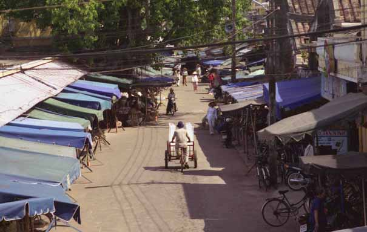

Same same but different
Ho Chi Minh City, Vietnam
We arrived in Ho Chi Minh City a few days ago – this is our last stop in Vietnam before heading for Cambodia. Since we last wrote we have been to two towns, Hue and Hoi An, both in central Vietnam and both very different. We took the Reunification Express from Hanoi to Hue where the Imperial Capital was based for a whole dynasty (the Nguyen Dynasty). Most of the site of the original city which was within the Citadel walls was bombed to oblivion during the American War. In fact, the centre of the city (called The Forbidden Purple City) is now totally non-existent – you just have to use your imagination when you go there. Most of the inhabitants of the city now live on the other bank of the Perfume River which suffers from dreadful floods every year.
Next stop was Hoi An, a former trading port in the 17th and 18th Centuries that fell into hard times when the river started silting up. It is now properous again because of tourism. We visited a former trader's house – all built in jackfruit tree wood. It was strange to be shown around someones house, someone who descended from a really rich Chinese merchant family but was now reduced to showing tourists round his house for income and trying to sell them the odd trinket or postcard on the way.
We stayed in a Chinese Merchant's house in the heart of the old town of Hoi An. We had an antique four poster bed and the room was dark wood panelled and, apart from the enormous spider who tried to join us in bed on the first night, it was a lovely place to stop for a few days!
Anyway, now we’re in Hoi Chi Minh City (Saigon). A crazy metropolis – millions of people all vying for a bit of space, millions of mopeds and beeping horns and lots of heavy rain showers as the monsoon is beginning to set in. We’re staying in a decent part of town, there’s loads of good restaurants here and plenty of nice places to hang out which contrasts dramatically to the other side of town which is… how can we describe it? … well, it shows the downside of life. People kept warning us to be careful and this made us feel not as safe as we’ve felt in the rest of the country.
For the first time since we came to Vietnam some people here have talked about the American War. It’s weird really, but before we came here the pictures in our heads of Vietnam were all based on war movies like Hamburger Hill and Full Metal Jacket. But, it couldn’t be more removed from that and, once here, the war isn’t really mentioned and you don’t really think about it because there aren’t any obvious traces of it. But it’s different here – maybe that’s because they lost and that still smarts or maybe it’s because the government don’t want the people here to forget that they lost? Either way, today the war became very apparent. We took a cyclo to a museum in town, The War Remnants Museum (formerly called the US War Crimes Museum). Our driver told us that he was a former Captain in the South Vietnamese Army and that the Communists had put him in prison for 9 years after the war. Apparentely this is the same story as many cyclo drivers in Saigon. Many were teachers and lawyers before the war and supported the South Vietnamese, therefore when the war was over they were sent to the countryside to be ‘re-educated’ and were stripped of their rights as a citizen of Saigon. These have never been returned to them and this means that they cannot own property or run businesses, so many remain single men and live on the streets under tarpaulin with their cyclos.
In the courtyard of the museum were an array of US tanks, planes, helicopters and bombs. The rooms off of the courtyard were full of photos, mainly taken by photo-journalists who had lost their lives in the fighting. Many of the photos were featured in Time Magazine and led the public sentiment to turn against the war. Photos of women and children being lined up to be shot – the photographer in this instance asked the firing squad to hold their fire while he took the photo. Then, as he turned away, he heard the shots being fired. Then there were the photos of the malformed children - victims of Agent Orange in their mothers’ wombs. The horrific skin conditions, the malformed limbs, the missing limbs – all in the name of defoliation.
When we left the museum we’d both seen just enough – neither of us could have looked at any more photos of the war and felt pretty numb. And, as we walked out a guy came up to us selling books – a guy with one leg, one eye and two stumps for arms – the reality behind those pictures we’d just been looking at. Of course we bought a book from him and of course we paid too much, how could we have done anything else? Okay, so the guy was there outside the museum because he knew he could pull on our heart strings because of what we’d just seen, but good for him, he was making the most of his lot and why not? Everyone needs to make a buck and this was probably the only way he could. The book we bought from him was ‘The Sorrow of War’ – how very apt.
So, tomorrow we move on to Cambodia. We’ll both be really sad to leave Vietnam as we’ve really fallen for the place and the people. Take for instance something we saw this afternoon. We were sitting in a café overlooking the street and the sky started to go dark. From nowhere appeared two ladies with stands and just as the rain began to fall they set up their stalls selling, what else, but raincoats. This is Vietnam – there’s always someone there trying to sell you something and sometimes it’s something you need, like a raincoat in a storm, and sometimes it’s a cushion cover when you’ve been walking uphill in the mountains for the last three hours. It really is a crazy, but extremely lovable place.
Next stop was Hoi An, a former trading port in the 17th and 18th Centuries that fell into hard times when the river started silting up. It is now properous again because of tourism. We visited a former trader's house – all built in jackfruit tree wood. It was strange to be shown around someones house, someone who descended from a really rich Chinese merchant family but was now reduced to showing tourists round his house for income and trying to sell them the odd trinket or postcard on the way.
We stayed in a Chinese Merchant's house in the heart of the old town of Hoi An. We had an antique four poster bed and the room was dark wood panelled and, apart from the enormous spider who tried to join us in bed on the first night, it was a lovely place to stop for a few days!
Anyway, now we’re in Hoi Chi Minh City (Saigon). A crazy metropolis – millions of people all vying for a bit of space, millions of mopeds and beeping horns and lots of heavy rain showers as the monsoon is beginning to set in. We’re staying in a decent part of town, there’s loads of good restaurants here and plenty of nice places to hang out which contrasts dramatically to the other side of town which is… how can we describe it? … well, it shows the downside of life. People kept warning us to be careful and this made us feel not as safe as we’ve felt in the rest of the country.
For the first time since we came to Vietnam some people here have talked about the American War. It’s weird really, but before we came here the pictures in our heads of Vietnam were all based on war movies like Hamburger Hill and Full Metal Jacket. But, it couldn’t be more removed from that and, once here, the war isn’t really mentioned and you don’t really think about it because there aren’t any obvious traces of it. But it’s different here – maybe that’s because they lost and that still smarts or maybe it’s because the government don’t want the people here to forget that they lost? Either way, today the war became very apparent. We took a cyclo to a museum in town, The War Remnants Museum (formerly called the US War Crimes Museum). Our driver told us that he was a former Captain in the South Vietnamese Army and that the Communists had put him in prison for 9 years after the war. Apparentely this is the same story as many cyclo drivers in Saigon. Many were teachers and lawyers before the war and supported the South Vietnamese, therefore when the war was over they were sent to the countryside to be ‘re-educated’ and were stripped of their rights as a citizen of Saigon. These have never been returned to them and this means that they cannot own property or run businesses, so many remain single men and live on the streets under tarpaulin with their cyclos.
In the courtyard of the museum were an array of US tanks, planes, helicopters and bombs. The rooms off of the courtyard were full of photos, mainly taken by photo-journalists who had lost their lives in the fighting. Many of the photos were featured in Time Magazine and led the public sentiment to turn against the war. Photos of women and children being lined up to be shot – the photographer in this instance asked the firing squad to hold their fire while he took the photo. Then, as he turned away, he heard the shots being fired. Then there were the photos of the malformed children - victims of Agent Orange in their mothers’ wombs. The horrific skin conditions, the malformed limbs, the missing limbs – all in the name of defoliation.
When we left the museum we’d both seen just enough – neither of us could have looked at any more photos of the war and felt pretty numb. And, as we walked out a guy came up to us selling books – a guy with one leg, one eye and two stumps for arms – the reality behind those pictures we’d just been looking at. Of course we bought a book from him and of course we paid too much, how could we have done anything else? Okay, so the guy was there outside the museum because he knew he could pull on our heart strings because of what we’d just seen, but good for him, he was making the most of his lot and why not? Everyone needs to make a buck and this was probably the only way he could. The book we bought from him was ‘The Sorrow of War’ – how very apt.
So, tomorrow we move on to Cambodia. We’ll both be really sad to leave Vietnam as we’ve really fallen for the place and the people. Take for instance something we saw this afternoon. We were sitting in a café overlooking the street and the sky started to go dark. From nowhere appeared two ladies with stands and just as the rain began to fall they set up their stalls selling, what else, but raincoats. This is Vietnam – there’s always someone there trying to sell you something and sometimes it’s something you need, like a raincoat in a storm, and sometimes it’s a cushion cover when you’ve been walking uphill in the mountains for the last three hours. It really is a crazy, but extremely lovable place.

The iceman making his daily deliveries in much haste as he lacks a freezer in his vehicle! Hoi An

The Holy See, headquarters of the Cao Dai religion in Tay Ninh. The followers revere a mixture of famous characters including Victor Hugo, Sun Yat Sen and Louis Pasteur.